Nuestra Historia
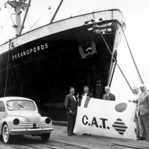
Nacimiento de Groupe CAT
Renault funda la empresa para mejorar el transporte marítimo de vehículos.
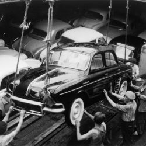
Distribución Renault en Francia
CAT comienza la distribución nacional de vehículos Renault.
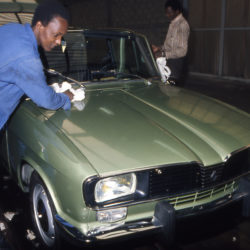
Expansión logística
Aumento de flota e infraestructura para reforzar operaciones.
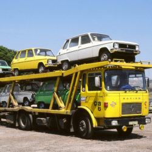
Flota especializada
Incorporación de camiones diseñados para transporte automotor.
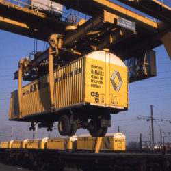
Primera filial internacional
CAT Bélgica marca el comienzo de la internacionalización del grupo.
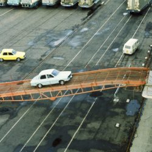
Avances tecnológicos
Implementación de soluciones para optimizar carga y descarga.
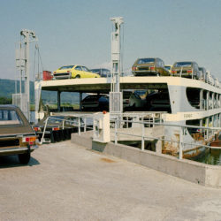
Expansión portuaria
Refuerzo de la logística en zonas portuarias clave.
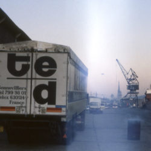
Lanzamiento de TED
Creación de la división TED (Transport Entreposage Distribution) para gestión de piezas y logística de carga.
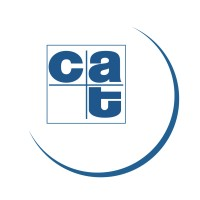
Apertura en Évreux
Inauguración de la agencia Évreux para ampliar cobertura operativa.
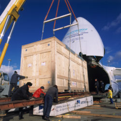
Modernización operativa
Incorporación de tecnología moderna para mejorar eficiencia logística.
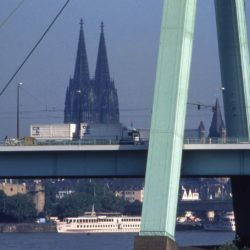
Nuevas rutas logísticas
Expansión del transporte terrestre a través de nuevas rutas.

Presencia en Italia y Venezuela
Apertura de nuevas oficinas para ampliar el alcance internacional.
Distribución de motocicletas
Inicia la logística de motos Kawasaki en Francia.
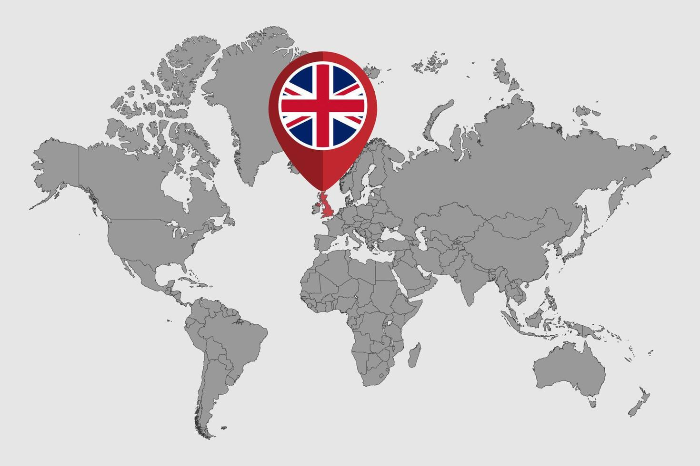
Expansión a Reino Unido
Instalación de operaciones en Gran Bretaña como parte del crecimiento europeo.
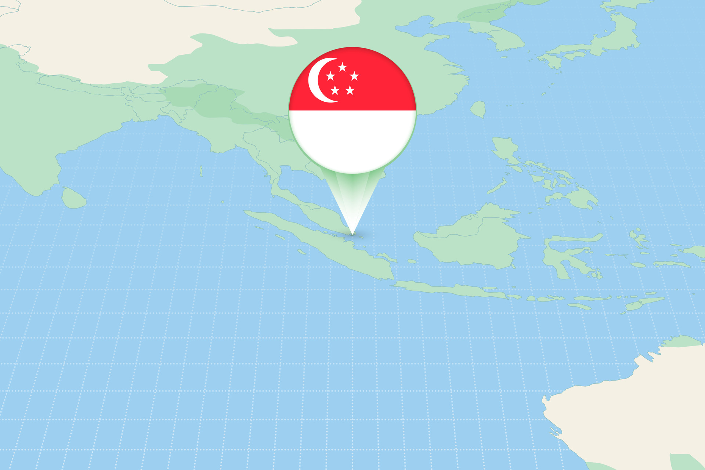
Llegada a Asia
Instalación en Singapur refuerza la presencia en el continente asiático.
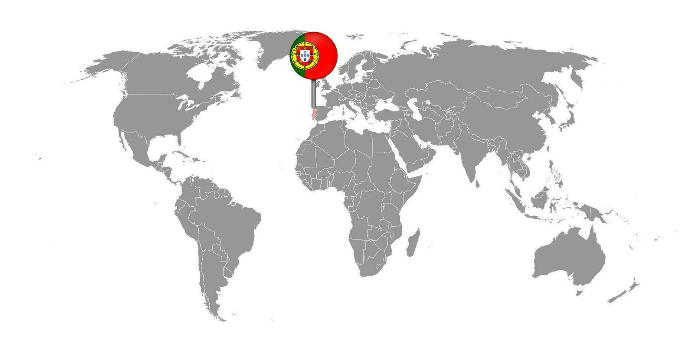
Nuevos destinos
El Groupe CAT extiende operaciones a Portugal.
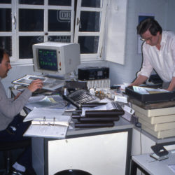
Avance tecnológico
Presentación de Districat, un sistema automático de rastreo vehicular.
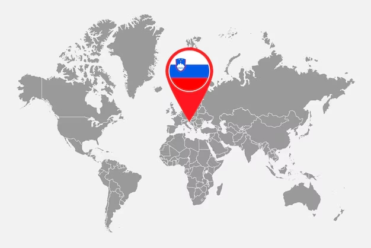
Expansión en Europa del Este
Establecimiento de operaciones en Eslovenia.
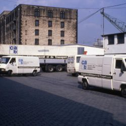
Consolidación de Flota
Con la desintegración del Bloque Comunista, el Groupe CAT se vuelve hacia el este y crea una red en la antigua República Democrática Alemana y una filial en Polonia.
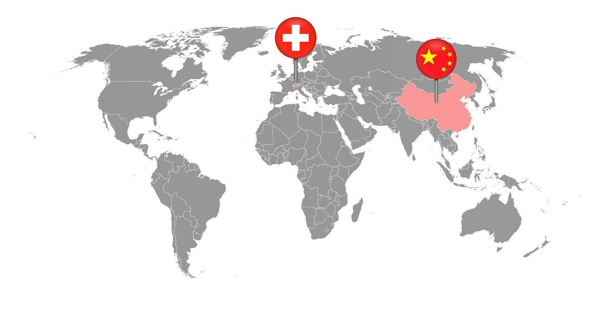
Consolidación de Flota
El Groupe CAT se implanta en enero en Austria y en Suiza. Con el fin de acompañar el desarrollo de sus actividades en Asia, el Groupe CAT abre una oficina de representación en Shanghái.
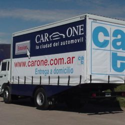
Creación CAT ARGENTINA
Se crea oficialmente Groupe CAT Argentina y Groupe CAT Brasil, marcando el inicio de la presencia del grupo en Sudamérica.
La operación se enfocó desde el inicio en la logística de vehículos terminados (FVL) y el desarrollo de infraestructuras propias en el MERCOSUR.
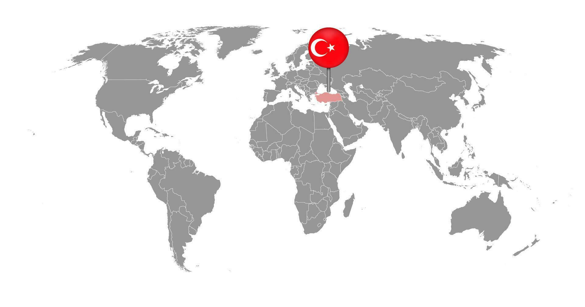
Expansión en Turquia
Creación de una oficina de representación en Turquía y de una filial en Eslovenia.
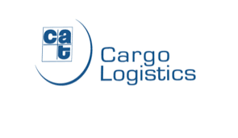
Consolidación
El grupo reorganiza sus actividades: la fusión de las direcciones Mercancías Generales y Transporte Internacional da nacimiento a CAT Logística Cargo.
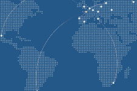
Consolidación
Renault cede el Groupe CAT al Consortium Global Automotive Logistics. Apoyado por sus accionistas, CAT suministra a Renault y al resto de clientes una red mundial completa.
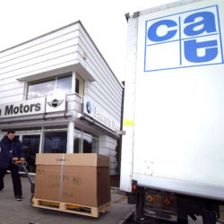
Expansión Global
CAT amplía sus servicios logísticos a nivel mundial, integrando nuevos mercados.
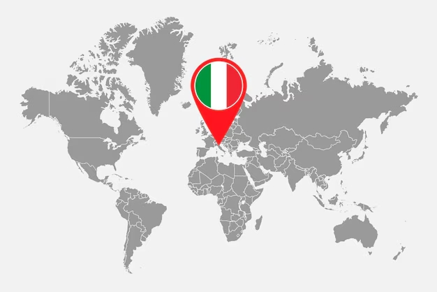
Expansión Europea
Renault amplía contrato en 11 países y CAT crea la joint venture MERCAT en Italia.
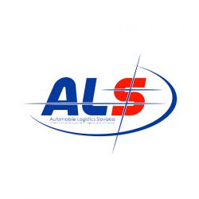
Alianzas Estratégicas
CAT establece alianzas internacionales para ampliar su red logística.
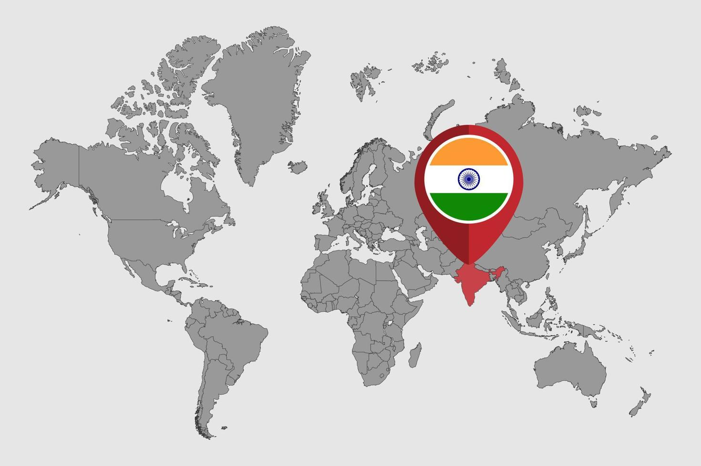
Alianzas Estratégicas
VSI se convierte en el nuevo accionista de GAL, propietaria de CAT. CAT trata de desarrollar sus activos en India, África del Norte y en los países del Este..
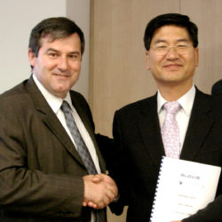
Alianzas Globales
CAT forma alianzas con principales actores logísticos a nivel mundial.
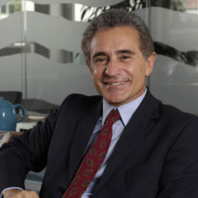
Optimización Operativa
Implementación de nuevas tecnologías para mejorar la eficiencia logística.
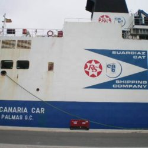
Crecimiento Sustentable
Enfoque en la sostenibilidad y reducción del impacto ambiental en operaciones.
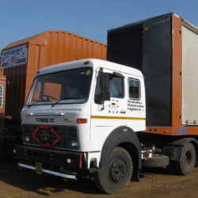
Innovación en Flota
Incorporación de vehículos modernos y tecnologías para mejorar el transporte.
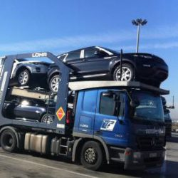
Logística Integrada
Implementación de sistemas integrados para optimizar cadena de suministro.
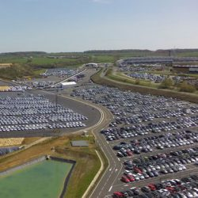
Expansión y Mejora
Ampliación de centros logísticos y flota para cubrir más mercados.
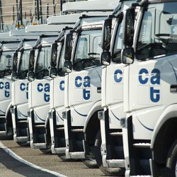
Crecimiento de Flota
CAT Argentina alcanza 300 equipos propios para transporte de vehículos y cargas generales.
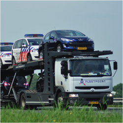
Fortalecimiento de Servicios
Incremento de servicios especializados para el transporte de vehículos.
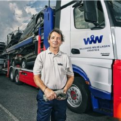
Reconocimiento Regional
Reconocimiento como líder en logística de vehículos en América Latina.
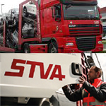
Plan de Inversiones
CAT Argentina adquiere camiones 0 km para su flota asegurando su participación activa en el mercado.
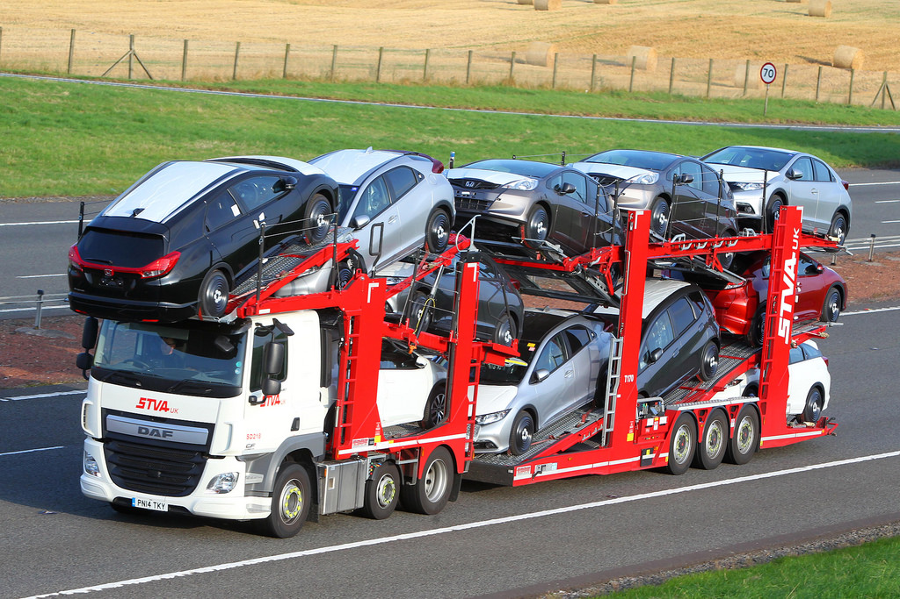
Adquisición Grupo STVA
Grupo CAT adquiere el grupo STVA consolidando una flota de 1700 camiones y 2600 vagones para transporte de vehículos, convirtiéndose en líder en Europa.